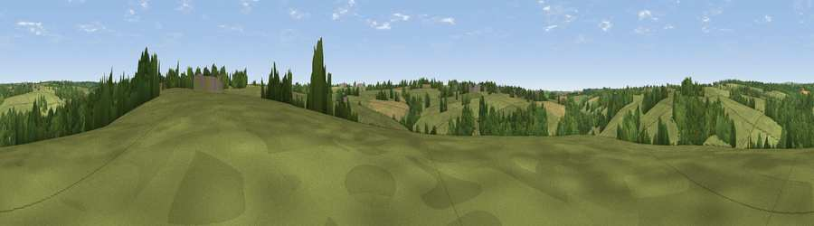

Viewpoint near Witheridge
#43718 in England · top 96% of its area beats it · near WitheridgeWhere it is
The exact computed spot (SS 81325 15425). Click the marker for map links.
The view, rendered

A 360° render of this exact spot computed from the terrain model, tree cover and land cover — summer colours, afternoon light, calibrated against photographs of famous viewpoints. Real trees, hedges and buildings will differ in detail.
The panorama
Grey silhouette: terrain skyline in each direction (720 bearings, Earth curvature and refraction included). Dashed green: skyline with trees (+15 m) and buildings (+8 m) as obstacles. Blue strip: how far the ground is visible on each bearing.
Where the view opens
Wedge length = distance to the farthest visible ground on that bearing (vegetation-aware). Rings at 10, 25 and 50 km.
What fills the view
70% grassland · 23% woodland · 5% cropland ·
Angular shares of the visible panorama (visual magnitude), not map area. Landscape diversity 0.34 (0–1 Shannon).
Key numbers
More beautiful places nearby
The staircase of upgrades: each row has a higher view potential than everything closer. Driving times are estimates from straight-line distance, calibrated against real road routing — check an actual route before setting out.
| Place | Direction | Drive | Score |
|---|---|---|---|
| Viewpoint near Witheridge | WNW · 3 km | ~7 min | 42.7 |
| Viewpoint near Rackenford | NNE · 4 km | ~10 min | 46.6 |
| Viewpoint near Kennerleigh | SSW · 6 km | ~13 min | 56.5 |
| Viewpoint near Kennerleigh | S · 6 km | ~13 min | 57.6 |
| Viewpoint near Rose Ash | NNW · 7 km | ~15 min | 58.4 |
| Viewpoint near Loxbeare | E · 8 km | ~16 min | 59.4 |
| Stoodleigh Beacon | ENE · 8 km | ~16 min | 66.7 |
| Viewpoint near Stockleigh Pomeroy | SE · 13 km | ~24 min | 69.7 |
50.92604, -3.68995 · source: screening · position refined by local search. Computed location — check access rights before visiting.